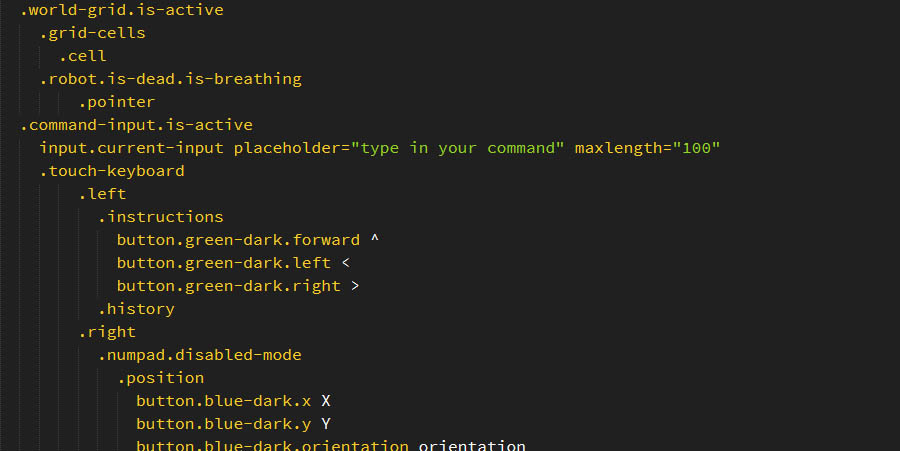
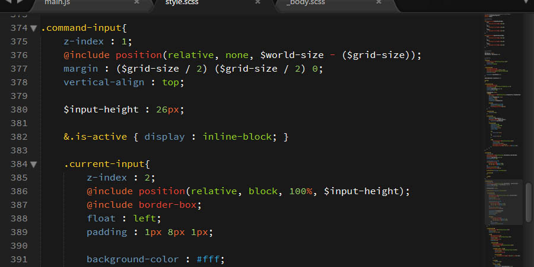
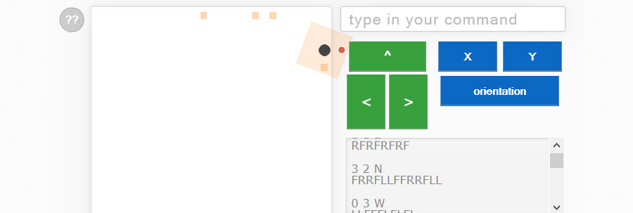
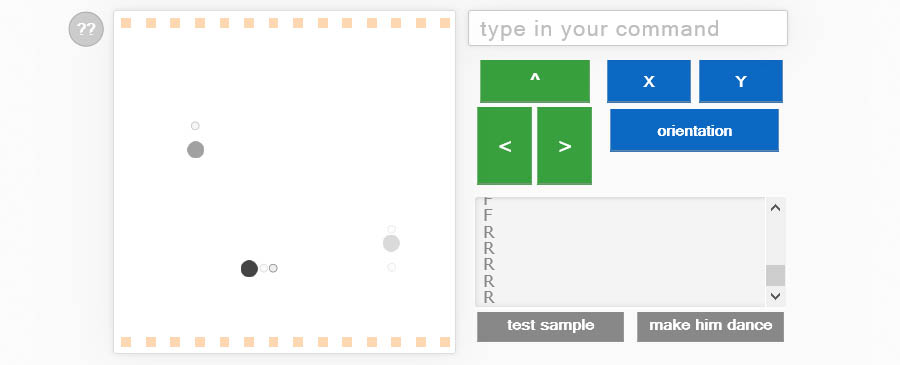

The curious circle
This is a small exercise I was given.
First things first, create a draft on paper.
Then I proceeded to create the structure and style, after setting up a simple live-server (I used my stk-toolbox and the included scss-helpers for that).
Finally I added the logic, while testing and re-adjusting the styling.
After that, I had some fun adding a little dance logic and this explanation.
I hope you liked the demo!
It's all written in vanilla javascript, .scss and .slim languages.
--
Jorge Antunes
@stoikerty
http://portfolio.stoikerty.com